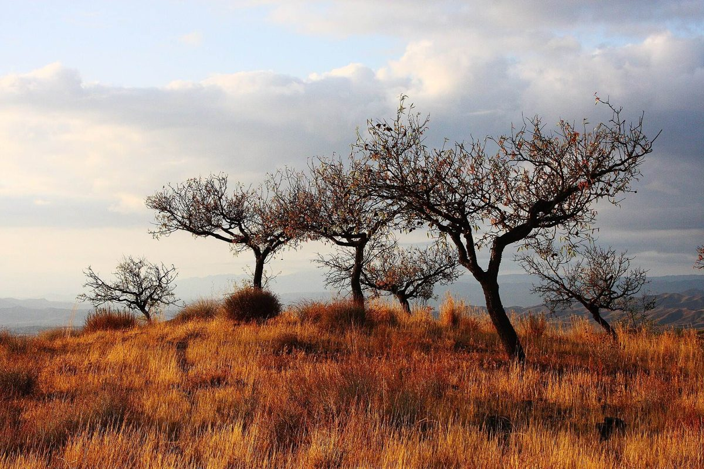

第2カーブ / 店のこと
店のこと
お店について確認できているのは、所在地とInstagramのアカウントだけです。
このページの「想像してみる」部分は、制作側が想像して書いたものです。お店の実際の様子・考え・メニューとは関係がありません。
確認できていること
- 店名は「Hilltop cafe」、業種はカフェ
- 所在地は山口県岩国市美和町長谷1135(〒740-1215)
- 電話番号はなし。連絡はInstagramから
- 営業時間・定休日・メニュー・価格・ご予約・駐車場は準備中

想像してみる
「Hilltop」という名前から
お店の名前の由来は分かりません。制作側は「丘の頂上」という言葉の意味から、ゆるやかな坂をのぼった先で、ひと息つく場所を思い浮かべました。あくまで制作側の想像で、実際のお店の姿ではありません。